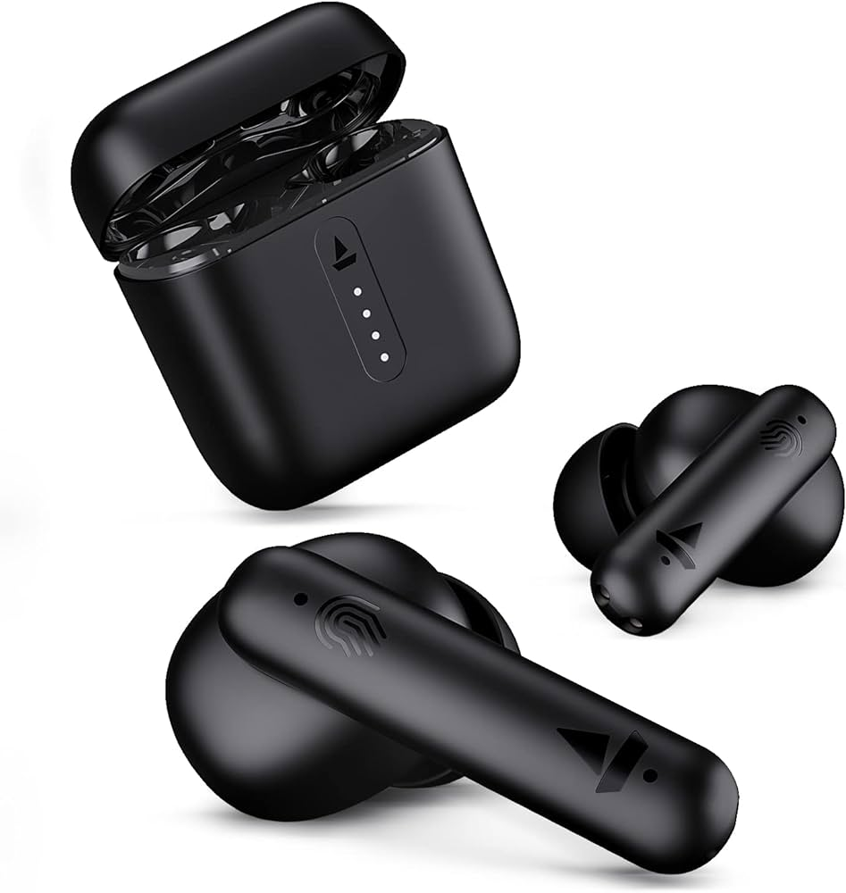

boAt Airdopes 141 Bluetooth TWS Earbuds with 42H Playtime,Low Latency Mode for Gaming, ENx Tech, IWP, IPX4 Water Resistance, Smooth Touch Controls(Bold Black)
Visit the boAt Store

Price-3500/-
On-the-Go Entertainment
Whether you're listening to music or answering calls, you can enjoy seamless wireless audio experiences with these Bluetooth v5.0 boAt Airdopes 148 TWS earbuds. And whether you're a beginner or a high-end audiophile, or you're simply someone who loves listening to music or gaming, these earbuds are the perfect companion to enhance your experiences.
Clear and Crisp Sound
The stereo sound of these in-ear earbuds allows you to savour every musical detail and nuance with clarity.
Extended Battery Life
You can dance to your favourite tunes without any interruptions with these boAt earbuds, as they boast a remarkable battery life of up to 42 hours. In merely 1 hour, you can rapidly charge these earbuds to 100%, all thanks to their quick-charging capability.